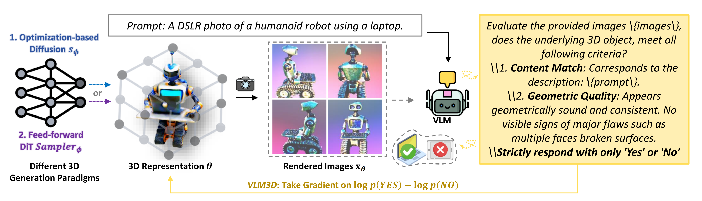
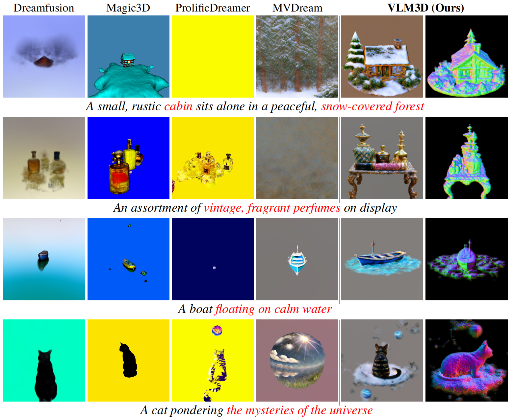
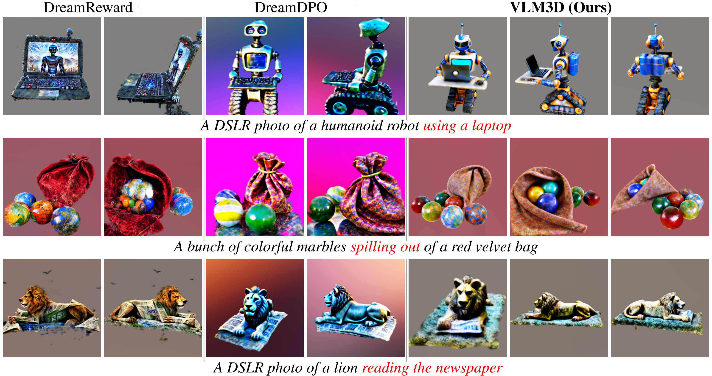
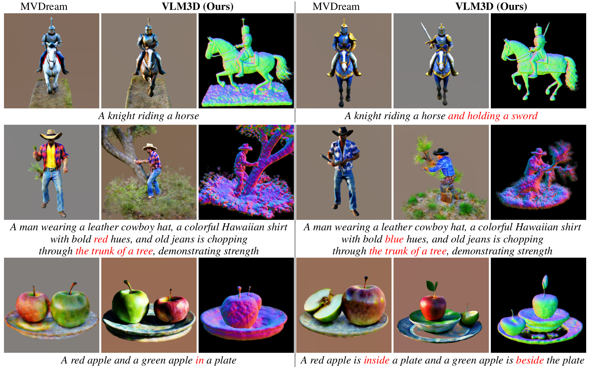
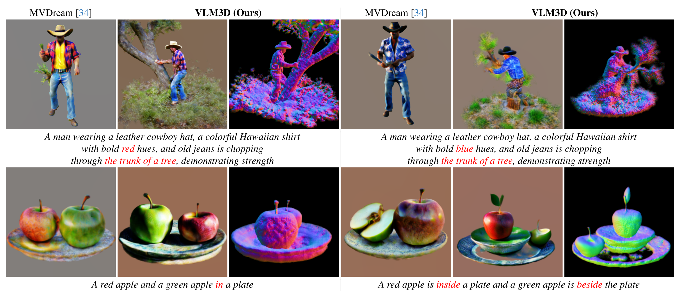
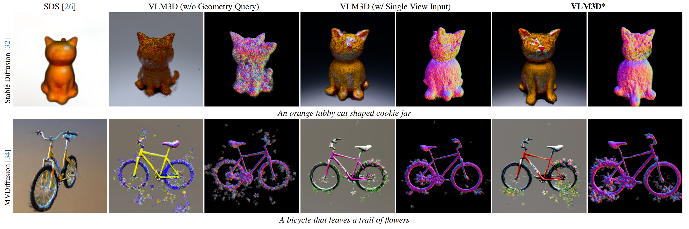

<!DOCTYPE html>
<html>
<head>
  <meta charset="utf-8">
  <meta name="description"
        content="Let Language Constrain Geometry:Vision–Language Models as Semantic and Spatial Critics for 3D Generation">
  <meta name="keywords" content="Diffusion Models, Text-to-3D, Vision-Language Model">
  <meta name="viewport" content="width=device-width, initial-scale=1">
  <title>
    Let Language Constrain Geometry:Vision–Language Models as Semantic and Spatial Critics for 3D Generation
  </title>
  <script
    type="module"
    src="./static/js/model-viewer.min.js"
  ></script>
  <style>
    model-viewer {
      cursor: grab;
      display: flex;
      height: 100%;
      width: 100%;
      overflow: hidden;
      position: relative;
      user-select: none;
    }
  </style>

  <!-- Global site tag (gtag.js) - Google Analytics -->
  <script async src="https://www.googletagmanager.com/gtag/js?id=G-PYVRSFMDRL"></script>
  <script>
    window.dataLayer = window.dataLayer || [];

    function gtag() {
      dataLayer.push(arguments);
    }

    gtag('js', new Date());

    gtag('config', 'G-PYVRSFMDRL');
  </script>

  <link href="https://fonts.googleapis.com/css?family=Google+Sans|Noto+Sans|Castoro"
        rel="stylesheet">
  <link rel="stylesheet" href="./static/css/bootstrap.min.css">
  <link rel="stylesheet" href="./static/css/style.css">
  <link rel="stylesheet" href="./static/css/bulma.min.css">
  <link rel="stylesheet" href="./static/css/bulma-carousel.min.css">
  <link rel="stylesheet" href="./static/css/bulma-slider.min.css">
  <link rel="stylesheet" href="./static/css/fontawesome.all.min.css">
  <link rel="stylesheet"
        href="https://cdn.jsdelivr.net/gh/jpswalsh/academicons@1/css/academicons.min.css">
  <link rel="stylesheet" href="./static/css/index.css">
<!--  <link rel="icon" href="./static/images/favicon.svg">-->

  <script src="https://ajax.googleapis.com/ajax/libs/jquery/3.5.1/jquery.min.js"></script>
  <script defer src="./static/js/fontawesome.all.min.js"></script>
  <script src="./static/js/bulma-carousel.min.js"></script>
  <script src="./static/js/bulma-slider.min.js"></script>
  <script src="./static/js/index.js"></script>
  <script type="text/x-mathjax-config">
  MathJax.Hub.Config({tex2jax: {inlineMath: [['$','$'], ['\\(','\\)']]}});
</script>
<script type="text/javascript"
  src="http://cdnjs.cloudflare.com/ajax/libs/mathjax/2.7.1/MathJax.js?config=TeX-AMS-MML_HTMLorMML">
</script>
  <style>
        .bold-and-large {
            font-weight: bold; /* 加粗 */
            font-size: 24px; /* 加大字体大小，你可以根据需要调整这个值 */
        }
    </style>
</head>
<body>

<style>
  .container {
    max-width: 1100px;
    margin: 0 auto;
  }
</style>

<!--<nav class="navbar" role="navigation" aria-label="main navigation">-->
<!--  <div class="navbar-brand">-->
<!--    <a role="button" class="navbar-burger" aria-label="menu" aria-expanded="false">-->
<!--      <span aria-hidden="true"></span>-->
<!--      <span aria-hidden="true"></span>-->
<!--      <span aria-hidden="true"></span>-->
<!--    </a>-->
<!--  </div>-->
<!--  <div class="navbar-menu">-->
<!--    <div class="navbar-start" style="flex-grow: 1; justify-content: center;">-->
<!--      <a class="navbar-item" href="https://keunhong.com">-->
<!--      <span class="icon">-->
<!--          <i class="fas fa-home"></i>-->
<!--      </span>-->
<!--      </a>-->

<!--      <div class="navbar-item has-dropdown is-hoverable">-->
<!--        <a class="navbar-link">-->
<!--          More Research-->
<!--        </a>-->
<!--        <div class="navbar-dropdown">-->
<!--          <a class="navbar-item" href="https://hypernerf.github.io">-->
<!--            HyperNeRF-->
<!--          </a>-->
<!--          <a class="navbar-item" href="https://nerfies.github.io">-->
<!--            Nerfies-->
<!--          </a>-->
<!--          <a class="navbar-item" href="https://latentfusion.github.io">-->
<!--            LatentFusion-->
<!--          </a>-->
<!--          <a class="navbar-item" href="https://photoshape.github.io">-->
<!--            PhotoShape-->
<!--          </a>-->
<!--        </div>-->
<!--      </div>-->
<!--    </div>-->

<!--  </div>-->
<!--</nav>-->


<section class="hero">
  <div class="hero-body">
    <div class="container is-max-desktop">
      <div class="columns is-centered">
        <div class="column has-text-centered">
          <h1 class="title is-1 publication-title">Let Language Constrain Geometry:<br>Vision–Language Models as Semantic and Spatial Critics for 3D Generation</h1>
          <div class="is-size-5 publication-authors">
            <span class="author-block">
              <a href="https://scholar.google.com/citations?user=M6bEs8IAAAAJ&hl=en&oi=ao">Weimin Bai</a><sup>1</sup>,</span>
            <span class="author-block">
              <a href="https://scholar.google.com/citations?user=moOB0R4AAAAJ&hl=en&oi=ao">Yubo Li</a><sup>1</sup>,</span>
            <span class="author-block">
              <a href="https://pkulwj1994.github.io/">Weijian Luo</a><sup>2</sup>,
            <span class="author-block">
              <a href="https://scholar.google.com/citations?user=WUMu1KkAAAAJ&hl=en&oi=ao">Zeqiang Lai</a><sup>3</sup>,
            <span class="author-block">
              <a href="https://scholar.google.com/citations?user=7Gqp6FsAAAAJ&hl=en&oi=ao">Yequan Wang</a><sup>4</sup>,
            </span>
            <span class="author-block">
              <a href="https://wenzhengchen.github.io/">Wenzheng Chen</a><sup>1</sup>,
            </span>
            <span class="author-block">
              <a href="http://users.cms.caltech.edu/~hesun/">He Sun</a><sup>1✉</sup>,
            </span>
          </div>

          <div class="is-size-5 publication-authors">
            <span class="author-block"><sup>1</sup>Peking University,</span>
            <span class="author-block"><sup>2</sup>Xiaohongshu Inc</span>
            <span class="author-block"><sup>3</sup>MMLab, CUHK</span>
            <span class="author-block"><sup>4</sup>BAAI, Beijing</span>
            <span class="author-block"><sup>✉</sup>Corresponding Author</span>
          </div>

          <div class="column has-text-centered">
            <div class="publication-links">
<!--              &lt;!&ndash; PDF Link. &ndash;&gt;-->
<!--              <span class="link-block">-->
<!--                <a href="https://arxiv.org/pdf/2011.12948"-->
<!--                   class="external-link button is-normal is-rounded is-dark">-->
<!--                  <span class="icon">-->
<!--                      <i class="fas fa-file-pdf"></i>-->
<!--                  </span>-->
<!--                  <span>Paper</span>-->
<!--                </a>-->
<!--              </span>-->
              <span class="link-block">
                <a href="https://arxiv.org/abs/2511.14271"
                   class="external-link button is-normal is-rounded is-dark">
                  <span class="icon">
                      <i class="ai ai-arxiv"></i>
                  </span>
                  <span>arXiv</span>
                </a>
              </span>
<!--              &lt;!&ndash; Video Link. &ndash;&gt;-->
<!--              <span class="link-block">-->
<!--                <a href="https://www.youtube.com/watch?v=MrKrnHhk8IA"-->
<!--                   class="external-link button is-normal is-rounded is-dark">-->
<!--                  <span class="icon">-->
<!--                      <i class="fab fa-youtube"></i>-->
<!--                  </span>-->
<!--                  <span>Video</span>-->
<!--                </a>-->
<!--              </span>-->
              <!-- Code Link. -->
              <span class="link-block">
                <a href="https://github.com/ai4imaging/vlm3d"
                   class="external-link button is-normal is-rounded is-dark">
                  <span class="icon">
                      <i class="fab fa-github"></i>
                  </span>
                  <span>Code</span>
                  </a>
              </span>
<!--              &lt;!&ndash; Dataset Link. &ndash;&gt;-->
<!--              <span class="link-block">-->
<!--                <a href="https://github.com/google/nerfies/releases/tag/0.1"-->
<!--                   class="external-link button is-normal is-rounded is-dark">-->
<!--                  <span class="icon">-->
<!--                      <i class="far fa-images"></i>-->
<!--                  </span>-->
<!--                  <span>Data</span>-->
<!--                  </a>-->
<!--              </span>-->
            </div>
<!--      <div>-->
<!--        <span class="center"></span>-->
<!--      </div>-->
          </div>
        </div>
      </div>
    </div>
  </div>


</section>


<section class="" style="padding-bottom: 3rem">
  <div class="container is-max-desktop">
    <!-- Abstract. -->
    <div class="columns is-centered has-text-centered">
      <div class="column is-four-fifths">
        <h2 class="title is-3">Abstract</h2>
        <div class="content has-text-justified">
          <p>
            Text-to-3D generation has advanced rapidly, yet state-of-theart models, encompassing both optimization-based and feedforward architectures, still face two fundamental limitations.
            First, they struggle with coarse semantic alignment, often
            failing to capture fine-grained prompt details. Second, they
            lack robust 3D spatial understanding, leading to geometric
            inconsistencies and catastrophic failures in part assembly
            and spatial relationships. To address these challenges, we
            propose VLM3D, a general framework that repurposes large
            vision-language models (VLMs) as powerful, differentiable
            semantic and spatial critics. Our core contribution is a dualquery critic signal derived from the VLM’s "Yes/No" logodds, which assesses both semantic fidelity and geometric
            coherence. We demonstrate the generality of this guidance
            signal across two distinct paradigms: (1) As a reward objective for optimization-based pipelines, VLM3D significantly
            outperforms existing methods on standard benchmarks. (2)
            As a test-time guidance module for feed-forward pipelines,
            it actively steers the iterative sampling process of SOTA native 3D models to correct severe spatial errors. VLM3D
            establishes a principled and generalizable path to inject
            the VLM’s rich, language-grounded understanding of both
            semantics and space into diverse 3D generative pipelines.
          </p>
        </div>
      </div>
    </div>
    <!--/ Abstract. -->

    <!-- Paper video. -->
    <div class="columns is-centered has-text-centered">
      <div class="column is-four-fifths">
        <h2 class="title is-3">Method</h2>
<!--        <div class="publication-video">-->
<!--          <iframe src="https://www.youtube.com/embed/MrKrnHhk8IA?rel=0&amp;showinfo=0"-->
<!--                  frameborder="0" allow="autoplay; encrypted-media" allowfullscreen></iframe>-->
<!--        </div>-->
        <div>
        <span class="center"></span><br>
          <!-- <p class="bold-and-large">E-step, draw samples from LDMs: </p>
            <span class="center"></span><br>
          <br>
          <p class="bold-and-large">M-step, update forward model through MAP:
              <span class="center"></span><br>
          </p>
          <br>
          * Further details can be found in the paper. -->
        </div>
      </div>
    </div>
    <!--/ Paper video. -->
  </div>
</section>

<section class="section">
  <div class="container is-max-desktop">
    <div class="columns is-centered">
      <div class="column is-full-width">
        <h2 class="title is-3">Video Results</h2>
        <div class="content">
          <!-- 主要布局：左边大视频，右边小视频网格 -->
          <div class="columns">
            <!-- 左边：大正方形视频区域 -->
            <div class="column is-6">
              <div class="box">
                <video controls autoplay muted loop style="width: 100%; aspect-ratio: 1; object-fit: cover;">
                  <source src="./static/Video/Several large, solid, cube-shaped parcels, wrapped in brown paper and tied with string, each labeled with a different destination, awaiting dispatch in a post office/it16000-test.mp4" type="video/mp4">
                  Your browser does not support the video tag.
                </video>
                <p class="has-text-centered" style="margin-top: 10px; font-weight: bold;">Several large, solid, cube-shaped parcels</p>
              </div>
            </div>

            <!-- 右边：小视频网格区域 -->
            <div class="column is-6">
              <!-- 第一行：2x3网格 (6个小视频) -->
              <div class="box" style="margin-bottom: 15px;">
                <div class="columns is-multiline is-mobile" style="margin: 0;">
                  <!-- 第一行 -->
                  <div class="column is-4">
                    <video controls autoplay muted loop style="width: 100%; height: 80px; object-fit: cover;">
                      <source src="./static/Video/Orange monarch butterfly resting on a dandelion/it16000-test.mp4" type="video/mp4">
                    </video>
                    <p class="has-text-centered" style="margin-top: 5px; font-size: 0.8em;">Orange monarch butterfly</p>
                  </div>
                  <div class="column is-4">
                    <video controls autoplay muted loop style="width: 100%; height: 80px; object-fit: cover;">
                      <source src="./static/Video/A cat pondering the mysteries of the universe/it16000-test.mp4" type="video/mp4">
                    </video>
                    <p class="has-text-centered" style="margin-top: 5px; font-size: 0.8em;">A cat pondering the mysteries</p>
                  </div>
                  <div class="column is-4">
                    <video controls autoplay muted loop style="width: 100%; height: 80px; object-fit: cover;">
                      <source src="./static/Video/Floating bonsai tree, roots in mid-air/it16000-test.mp4" type="video/mp4">
                    </video>
                    <p class="has-text-centered" style="margin-top: 5px; font-size: 0.8em;">Floating bonsai tree</p>
                  </div>
                  <!-- 第二行 -->
                  <div class="column is-4">
                    <video controls autoplay muted loop style="width: 100%; height: 80px; object-fit: cover;">
                      <source src="./static/Video/A large, multi-layered, symmetrical wedding cake, with smooth fondant, delicate piping, and lifelike sugar flowers in full bloom, displayed on a silver stand/it16000-test.mp4" type="video/mp4">
                    </video>
                    <p class="has-text-centered" style="margin-top: 5px; font-size: 0.8em;">Multi-layered wedding cake</p>
                  </div>
                  <div class="column is-4">
                    <video controls autoplay muted loop style="width: 100%; height: 80px; object-fit: cover;">
                      <source src="./static/Video/A carved wooden bear with a salmon in mouth/it16000-test.mp4" type="video/mp4">
                    </video>
                    <p class="has-text-centered" style="margin-top: 5px; font-size: 0.8em;">Carved wooden bear</p>
                  </div>
                  <div class="column is-4">
                    <video controls autoplay muted loop style="width: 100%; height: 80px; object-fit: cover;">
                      <source src="./static/Video/A sequence of street lamps, casting pools of light on cobblestone paths as twilight descends/it16000-test.mp4" type="video/mp4">
                    </video>
                    <p class="has-text-centered" style="margin-top: 5px; font-size: 0.8em;">Sequence of street lamps</p>
                  </div>
                </div>
              </div>

              <!-- 第二行：3个1x1视频 -->
              <div class="box">
                <div class="columns is-multiline is-mobile" style="margin: 0;">
                  <div class="column is-4">
                    <video controls autoplay muted loop style="width: 100%; height: 80px; object-fit: cover;">
                      <source src="./static/Video/A golden retriever plush toy, floppy-eare/it16000-test.mp4" type="video/mp4">
                    </video>
                    <p class="has-text-centered" style="margin-top: 5px; font-size: 0.8em;">Golden retriever plush toy</p>
                  </div>
                  <div class="column is-4">
                    <video controls autoplay muted loop style="width: 100%; height: 80px; object-fit: cover;">
                      <source src="./static/Video/A torn hat/it16000-test.mp4" type="video/mp4">
                    </video>
                    <p class="has-text-centered" style="margin-top: 5px; font-size: 0.8em;">A torn hat</p>
                  </div>
                  <div class="column is-4">
                    <video controls autoplay muted loop style="width: 100%; height: 80px; object-fit: cover;">
                      <source src="./static/Video/Several large, solid, cube-shaped parcels, wrapped in brown paper and tied with string, each labeled with a different destination, awaiting dispatch in a post office/it16000-test.mp4" type="video/mp4">
                    </video>
                    <p class="has-text-centered" style="margin-top: 5px; font-size: 0.8em;">Additional example</p>
                  </div>
                </div>
              </div>
            </div>
          </div>
        </div>
      </div>
    </div>
  </div>
</section>


<section class="section">
  <div class="container is-max-desktop">
    <!-- Animation. -->
    <div class="columns is-centered">
      <div class="column is-full-width">
        <!-- Comparison with Stable Diffusion baselines -->
        <h2 class="title is-3">Comparison with Baselines on the GPTEval3D Benchmark</h2>
        <div class="content has-text-centered">
          <div style="margin: 20px 0;">
            
            <p>VLM3D outperforms baseline methods in geometric consistency, 3D plausibility, texture richness, and text alignment.</p>
          </div>
        </div>

        <!-- Comparison with MVDiffusion baselines -->
        <h2 class="title is-3">Comparison with Baselines based on MVDiffusion and reward model</h2>
        <div class="content has-text-centered">
          <div style="margin: 20px 0;">
            
            <p>VLM3D outperforms these reward-involved methods in semantic fidelity while retaining high perceptual quality.</p>
          </div>
        </div>

        <!-- Comparison of VLM3D with feed-forward baselines. -->
        <h2 class="title is-3">Comparison of VLM3D with feed-forward baselines.</h2>
        <div class="content has-text-centered">
          <div style="margin: 20px 0;">
            
            <p>VLM3D outperforms feed-forward baselines in semantic fidelity while retaining high perceptual quality.</p>
          </div>
        </div>

        <h2 class="title is-3">Sensitivity Analysis to Text Perturbations</h2>
        <div class="content has-text-centered">
          <div style="margin: 20px 0;">
            
            <p>VLM3D accurately changes clothing color (first row), and updates spatial relations (second row), </p>demonstrating
              its better semantic understanding than baselines.</p>
          </div>
        </div>

        <h2 class="title is-3">Ablation of Geometric Query and Multi-View Input</h2>
        <div class="content has-text-centered">
          <div style="margin: 20px 0;">
            
            <p>We assess the impact of (a) removing the explicit geometry-consistency
              query from the VLM prompt and (b) using a single view instead of multi-view images. Omitting either component degrades 3D quality—leading to Janus-face artifacts, floating parts, and fractured surfaces. </p>Each row uses a different diffusion backbone: the top employs
              Stable Diffusion 2-1, while the bottom uses MVDream.</p>
          </div>
        </div>

    </div>
    </div>
  </div>
</section>

<section class="section">
  <div class="container is-max-desktop">
    <div class="columns is-centered">
      <div class="column is-full-width">
        <h2 class="title is-3">Additional results generated by our optimization-based VLM3D</h2>
        <div class="content has-text-centered">
          <div style="margin: 20px 0;">
            
            <p>Additional results generated by our optimization-based VLM3D.</p>
          </div>
        </div>
      </div>
    </div>
  </div>
</section>

<section class="section">
  <div class="container is-max-desktop">
    <div class="columns is-centered">
      <div class="column is-full-width">
        <h2 class="title is-3">Additional results generated by our optimization-based VLM3D</h2>
        <div class="content has-text-centered">
          <div style="margin: 20px 0;">
            
            <p>Additional results generated by our optimization-based VLM3D.</p>
          </div>
        </div>
      </div>
    </div>
  </div>
</section>

<section class="section">
  <div class="container is-max-desktop">
    <div class="columns is-centered">
      <div class="column is-full-width">
        <h2 class="title is-3">Additional results generated by our optimization-based VLM3D</h2>
        <div class="content has-text-centered">
          <div style="margin: 20px 0;">
            
            <p>Additional results generated by our feed-forward-based VLM3D.</p>
          </div>
        </div>
      </div>
    </div>
  </div>
</section>

<section class="section">
  <div class="container is-max-desktop">
    <div class="columns is-centered">
      <div class="column is-full-width">
        <h2 class="title is-3">Additional results generated by our optimization-based VLM3D</h2>
        <div class="content has-text-centered">
          <div style="margin: 20px 0;">
            
            <p>Additional results generated by our feed-forward-based VLM3D.</p>
          </div>
        </div>
      </div>
    </div>
  </div>
</section>

<section class="section">
  <div class="container is-max-desktop">
    <div class="columns is-centered">
      <div class="column is-full-width">
        <h2 class="title is-3">Quantitative Results</h2>
        <div class="content has-text-centered">
          <p class="has-text-justified">
            <strong>Quantitative Results on 110 Prompts from the GPTEval3D Benchmark.</strong> We compute all six GPTEval3D metrics—text alignment, 3D plausibility, texture–geometry coherence, geometry details, texture details, and overall score—to comprehensively evaluate 3D generation quality. VLM3D achieves the highest score on every metric, demonstrating its superior performance.
          </p>
          <div class="table-container" style="margin: 20px 0;">
            <table class="table is-bordered is-striped is-narrow is-hoverable is-fullwidth">
              <thead>
                <tr>
                  <th rowspan="2">Method</th>
                  <th colspan="6">Prompts from GPTEval3D</th>
                </tr>
                <tr>
                  <th>Alignment</th>
                  <th>Plausibility</th>
                  <th>T-G Coherency</th>
                  <th>Geo Details</th>
                  <th>Tex Details</th>
                  <th>Overall</th>
                </tr>
              </thead>
              <tbody>
                <tr>
                  <td>DreamFusion</td>
                  <td>1000.0</td>
                  <td>1000.0</td>
                  <td>1000.0</td>
                  <td>1000.0</td>
                  <td>1000.0</td>
                  <td>1000.0</td>
                </tr>
                <tr>
                  <td>DreamGaussian</td>
                  <td>1100.6</td>
                  <td>953.6</td>
                  <td>1158.6</td>
                  <td>1126.2</td>
                  <td>1130.8</td>
                  <td>951.4</td>
                </tr>
                <tr>
                  <td>Fantasia3D</td>
                  <td>1067.9</td>
                  <td>891.9</td>
                  <td>1006.0</td>
                  <td>1109.3</td>
                  <td>1027.5</td>
                  <td>933.5</td>
                </tr>
                <tr>
                  <td>Instant3D</td>
                  <td>1200.0</td>
                  <td>1087.6</td>
                  <td>1152.7</td>
                  <td>1152.0</td>
                  <td>1181.3</td>
                  <td>1097.8</td>
                </tr>
                <tr>
                  <td>Latent-NeRF</td>
                  <td>1222.3</td>
                  <td>1144.8</td>
                  <td>1156.7</td>
                  <td>1180.5</td>
                  <td>1160.8</td>
                  <td>1178.7</td>
                </tr>
                <tr>
                  <td>Magic3D</td>
                  <td>1152.3</td>
                  <td>1000.8</td>
                  <td>1084.4</td>
                  <td>1178.1</td>
                  <td>1084.6</td>
                  <td>961.7</td>
                </tr>
                <tr>
                  <td>ProlificDreamer</td>
                  <td>1261.8</td>
                  <td>1058.7</td>
                  <td>1152.0</td>
                  <td>1246.4</td>
                  <td>1180.6</td>
                  <td>1012.5</td>
                </tr>
                <tr>
                  <td>SyncDreamer</td>
                  <td>1041.2</td>
                  <td>968.8</td>
                  <td>1083.1</td>
                  <td>1064.2</td>
                  <td>1045.7</td>
                  <td>963.5</td>
                </tr>
                <tr>
                  <td>MVDream</td>
                  <td>1270.5</td>
                  <td>1147.5</td>
                  <td>1250.6</td>
                  <td>1324.9</td>
                  <td>1255.5</td>
                  <td>1097.7</td>
                </tr>
                <tr>
                  <td>DreamReward<sup>1</sup></td>
                  <td>1287.5</td>
                  <td>1195.0</td>
                  <td>1254.4</td>
                  <td>1295.5</td>
                  <td>1261.6</td>
                  <td>1193.3</td>
                </tr>
                <tr>
                  <td>DreamDPO</td>
                  <td>1298.9</td>
                  <td>1171.9</td>
                  <td>1276.4</td>
                  <td>1373.25</td>
                  <td>1296.9</td>
                  <td>1203.1</td>
                </tr>
                <tr>
                  <td><strong>VLM3D (Ours)</strong></td>
                  <td><strong>1365.5</strong></td>
                  <td><strong>1293.7</strong></td>
                  <td><strong>1365.4</strong></td>
                  <td><strong>1419.0</strong></td>
                  <td><strong>1368.7</strong></td>
                  <td><strong>1268.6</strong></td>
                </tr>
              </tbody>
            </table>
          </div>
          <p class="has-text-justified" style="font-size: 0.9em;">
            <sup>1</sup> Our metrics differ from those reported in the original DreamReward paper because GPT-4V has been deprecated in GPTEval3D, so we instead use GPT-4o-mini.
          </p>
          <p class="has-text-justified">
            <strong>Quantitative Results for feed-forward pipelines on 24 prompts.</strong> VLM3D boosts both semantic and geometric quality.
          </p>
          <div class="table-container" style="margin: 20px 0;">
            <table class="table is-bordered is-striped is-narrow is-hoverable is-fullwidth">
              <thead>
                <tr>
                  <th>Method</th>
                  <th>CLIP-D ↓</th>
                  <th>FID ↓</th>
                  <th>CLIP-FID ↓</th>
                  <th>Geo. ↓</th>
                </tr>
              </thead>
              <tbody>
                <tr>
                  <td>CLAY</td>
                  <td>0.22</td>
                  <td>310.3</td>
                  <td>53.11</td>
                  <td>0.63</td>
                </tr>
                <tr>
                  <td>Hunyuan3D</td>
                  <td>0.23</td>
                  <td>338.6</td>
                  <td>54.01</td>
                  <td>0.58</td>
                </tr>
                <tr>
                  <td><strong>VLM3D (Ours)</strong></td>
                  <td><strong>0.19</strong></td>
                  <td><strong>274.9</strong></td>
                  <td><strong>45.79</strong></td>
                  <td><strong>0.49</strong></td>
                </tr>
              </tbody>
            </table>
          </div>
          
        </div>
      </div>
    </div>
  </div>
</section>


<section class="section" id="BibTeX">
  <div class="container is-max-desktop content">
    <h2 class="title">BibTeX</h2>
    <pre><code>@misc{bai2025letlanguageconstraingeometry,
      title={Let Language Constrain Geometry: Vision-Language Models as Semantic and Spatial Critics for 3D Generation}, 
      author={Weimin Bai and Yubo Li and Weijian Luo and Zeqiang Lai and Yequan Wang and Wenzheng Chen and He Sun},
      year={2025},
      eprint={2511.14271},
      archivePrefix={arXiv},
      primaryClass={cs.CV},
      url={https://arxiv.org/abs/2511.14271}, 
    }
}</code></pre>
  </div>
</section>


<footer class="footer">
  <div class="container">
    <div class="content has-text-centered">
      <a class="icon-link"
         href="./static/videos/nerfies_paper.pdf">
        <i class="fas fa-file-pdf"></i>
      </a>
      <a class="icon-link" href="https://github.com/keunhong" class="external-link" disabled>
        <i class="fab fa-github"></i>
      </a>
    </div>
    <div class="columns is-centered">
      <div class="column is-8">
        <div class="content">
<!--          <p>-->
<!--            This website is licensed under a <a rel="license"-->
<!--                                                href="http://creativecommons.org/licenses/by-sa/4.0/">Creative-->
<!--            Commons Attribution-ShareAlike 4.0 International License</a>.-->
<!--          </p>-->
          <p>
            The website template is borrowed from <a
              href="https://github.com/nerfies/nerfies.github.io">Nerfies</a> and licensed under a <a rel="license"
                                                href="http://creativecommons.org/licenses/by-sa/4.0/">Creative
            Commons Attribution-ShareAlike 4.0 International License</a>.
          </p>
        </div>
      </div>
    </div>
  </div>
</footer>

</body>
</html>
